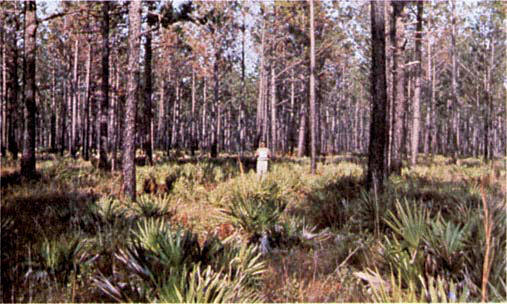
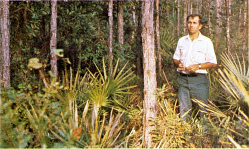
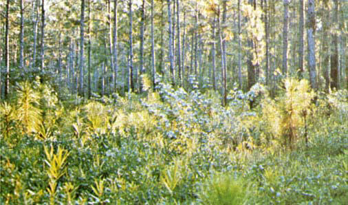

Fires burn through the surface and shrub strata with equal ease and can occur at higher dead fuel moisture contents because of the flammability of live foliage and other live material. Stands of shrubs are generally between 2 and 6 feet (0.6 and 1.8 m) high. Palmetto-gallberry understory-pine overstory sites are typical and low pocosins may be represented. Black spruce-shrub combinations in Alaska may also be represented. Photographs 19, 20, and 21 depict field situations for this model.

Photo 19. Southern rough with light to moderate palmetto
understory.

Photo 20. Southern rough with moderate to heavy palmetto-gallberry
and other species.

Photo 21. Slash pine with gallberry, bay, and other species of
understory rough.